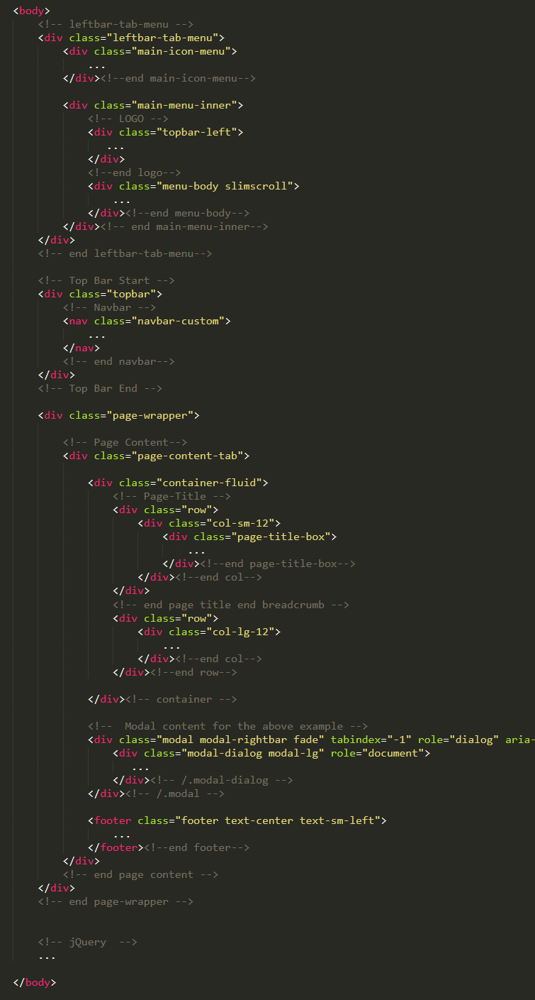

Thank you very much for your purchase!
If you have any questions that are beyond the scope of this documentation, please feel free to email or contact us via my page.
Introduction
Metrica is a Bootstrap 4 admin dashboard and multipurpose application ui kit. It is fully responsive and included awesome features to help build web applications fast and easy. The tones of well designed and developed layouts, components, elements, widgets and application pages allows you to create any saas based application, custom admin panel or dashboard application. The clean and flexible code enable you to easily customize it.
You are important for us and so please feel free to get back to me with any question or feedback.
Structure
I have tried my best to have standards and modular structure while developing the theme. Following sections are explaining the theme File & Folder, structure, html file struture and plugins.
File & Folder Structure
Theme Directory Metrica/ │ ├── analytics/ │ └── Analytics application pages │ ├── apps/ │ └── Application pages │ ├── assets/ │ ├── css/ │ │ └── All css files. │ ├── fonts/ │ │ └── All fonts files. │ ├── images/ │ │ └── images │ ├── js/ │ │ └── All js │ ├── pages/ │ │ └── All the pages related scripts │ ├── pages-material/ │ │ └── Material version pages related scripts │ └── scss/ │ └── All scss files │ ├── authentication/ │ └── Auth and error related pages │ ├── crm/ │ └── CRM application pages │ ├── crypto/ │ └── Crypto application pages │ ├── ecommerce/ │ └── Ecommerce application pages │ ├── helpdesk/ │ └── Helpdesk application pages │ ├── horizontal/ │ └── Horizontal Layout │ ├── hospital/ │ └── Hospital application pages │ ├── material-horizontal/ │ └── Material Horizontal Layout │ ├── material-version/ │ └── Material Vertical Layout │ ├── others/ │ └── UI Kit, forms, charts, tables, widgets, etc │ ├── pages/ │ └── Secondary pages including profile, invoice, pricing, faq, blog, etc │ ├── plugins/ │ └── All Plugins of Themes │ ├── projects/ │ └── Project management application pages │ └── vertical-2/ └── Vertical Tab Menu Layout Metrica Simple/ │ ├── analytics/ │ └── Analytics application pages │ ├── apps/ │ └── Application pages │ ├── assets/ │ ├── css/ │ │ └── All css files. │ ├── fonts/ │ │ └── All fonts files. │ ├── images/ │ │ └── images │ ├── js/ │ │ └── All js │ ├── pages/ │ │ └── All the pages related scripts │ └── scss/ │ └── All scss files │ ├── authentication/ │ └── Auth and error related pages │ ├── crm/ │ └── CRM application pages │ ├── crypto/ │ └── Crypto application pages │ ├── demos/ │ └── All demo pages │ ├── ecommerce/ │ └── Ecommerce application pages │ ├── helpdesk/ │ └── Helpdesk application pages │ ├── horizontal/ │ └── Horizontal Layout │ ├── hospital/ │ └── Hospital application pages │ ├── others/ │ └── UI Kit, forms, charts, tables, widgets, etc │ ├── pages/ │ └── Secondary pages including profile, invoice, pricing, faq, blog, etc │ ├── plugins/ │ └── All Plugins of Themes │ └── projects/ └── Project management application pages
HTML Structure

SCSS & CSS
Metrica comes with power of SCSS. The css files can be generated from scss by simply following below steps:
We are using gulp which allows to easily compilation of scss to csss. In case if you don't know - Gulp is a gulp is a toolkit for automating painful or time-consuming tasks in development workflow, so you can stop messing around and build something. You can read it more about it here
Prerequisites
Please follow below steps to install and setup all prerequisites:
- Nodejs
Make sure to have the Node.js installed & running in your computer. If you already have installed nodejs on your computer, you can skip this step
- Gulp
Make sure to have the Gulp installed & running in your computer. If you already have installed gulp on your computer, you can skip this step. In order to install, just run command
npm install -g gulpfrom your terminal. - Git
Make sure to have the Git installed & running in your computer. If you already have installed git on your computer, you can skip this step
Installation
To setup, follow below mentioned steps:
- Install Prerequisites
Make sure to have all above prerequisites installed & running in your computer
- Install Dependencies
Open your terminal, go to your folder and enter the command
npm install. This would install all required dependencies innode_modulesfolder.
After you finished with above steps, you can run the command to compile scss into css:
gulp
Following are the stylesheet files:
| File | Description |
|---|---|
bootstrap.min.css
|
Metrica uses the bootstrap v4.4.1. The core bootstrap file is being used in all the pages. |
icons.css
|
Combines various font icons. You should remove the fonts you don't plan to use from this file and recompile it. |
style.css
|
The main stylesheet file, it's being generated from scss and contains all the css styles combined. |
Javascript
Metrica uses jQuery, Bootstrap JS framework(at its core) and some of the third-party plugins. There are may more third party plugin which you can use according to your needs. The css is already containing matching style for these plugins so you will not need to do anything around it.
They are explained below:
| File | Description |
|---|---|
jquery.js, bootstrap.bundle.min.js,
jquery.slimscroll, etc.
|
These files are used at core of the theme. |
app.js
|
This is a main js file. It contains the custom JS code needed for features including layout, sidebar, etc. |
pages/*.js
|
These are the files containing pages specific code. They are mainly used for demo purpose. |
plugins/**.js
|
All supported and integrated third-party plugins are included in here. |
Credits & Official Documentation
I've used the following resources as listed. These are some awesome creation and I am really thankful to the respective community.
- Bootstrap
- Jquery
- Lightpick
- Custombox
- Full Calendar
- Range-slider
- Powerange
- Sweet-Alert2
- Nestable
- Rating
- Prism
- Timeout
- Idletimer
- Tippy
- Slick
- Animate.css
- Clipboard
- Dragula
- Font-Awesome
- Emoji
- Thimify
- Feather
- Typicons
- MD-icons
- Dripicons
- Datatables
- RWD-Table
- Foo-Table
- JsGrid
- table-dragger
- Tiny-editable
- Tabledit
- Bootstrap Datetimepicker
- Bootstrap Maxlength
- Bootstrap Touchspin
- Bootstrap Timepicker
- Bootstrap Colorpicker
- Clockpicker
- ColorPicker
- Multiselect
- Select2
- Tags-Input
- Bootstrap-Inputmask
- Bootstrap-select
- Bootstrap-X-editable
- Wysihtml5
- Summernote
- Dropify
- Validation
- Tinymce
- Wizard
- Repeater
- Cropper
- Jquery-ui
- Popup
- Parsley
- Isotope
- Moment
- Apex Chart
- Morris
- Raphael
- Chartist
- Chartjs
- Sparkline
- JQuery-Knob
- Flot-charts
- Peity
- Justgage
- Gmaps
- Leaflet
- Vector Maps
- Hopscotch Tour
- JsTree
- Waypoints
Support
Once again thank you for purchasing the theme. I am always avaialble to help you. If you have any suggestion or feature to make it more better, I am requesting you to contact me, I'll try my best to add them in future updates.
Best,
- Mannat-themes
Change Log
Version 2.1.0 - 17 April 2020
- Added Simple Layout
- Simple Layout Support RTL, Dark, Dark-RTL, Topbar-Dark, Left Sidenav-Dark
- Horizontal & Vertical Layouts
- Update Bootstrap v4.4.1 latest
- Fixed some issue.
Version 2.0 - 20 March 2020
- Refactored folder structure and code
-
New Added Helpdesk System
- Helpdesk Dashboard
- Tickets
- Reports
- Agents
- Added Right-bar (Appearance)
- Added Dragger Table
- Added Feather Icons
- Added Leaflet Map
- Update Apexcharts to v3.15.6 version
- Update Crypto System
- Update Tour Plugin
- Update Documatation
- Update Bootstrap v4.4.1 latest
- Update jQuery v3.4.1 latest
- Fixed some issue.
Version 1.5.0 - 26 September 2019
- Added Light Material and Dark Material Vertical Layout
- Update Full Calendar to 4.3.0 version
- Fixed some issue.
Version 1.4.0 - 26 August 2019
- Added Material Horizontal-2 and Material Vertical-2 Layout
- Fixed some issue.
Version 1.3.0 - 06 August 2019
- Added Horizontal-2 and vertical-2 Layout
- Fixed some issue.
Version 1.2.0 - 22 July 2019
- Added Hospital Horizontal Layout
- Added Hospital Vertical Layout
- Fixed some issue.
Version 1.1.0 - 25 June 2019
- Added Horizontal Layout
- Added Horizontal-Dark Layout
- Added Vertical RTL Layout
- Added Vertical RTL-Dark Layout
- Fixed responsive issue.
Version 1.0.0 - 17 June 2019
- Initial released